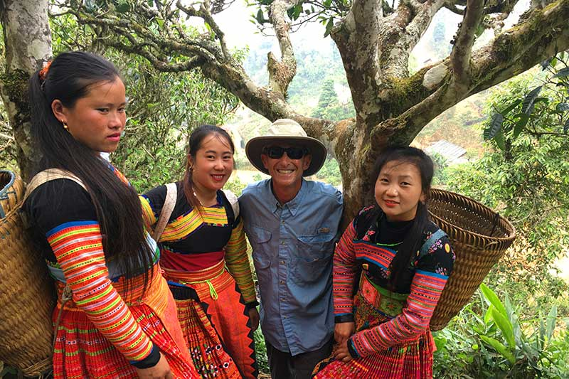

La cultura de Vietnam es diversa con 54 grupos étnicos. Cada sociedad tiene su propia cultura, actividades tradicionales y, por supuesto, especialidades apetitosas. Entre ellos, el grupo Cham es la primera cultura con una amplia gama de historias históricas o Ede proviene de Malasia. Los turistas definitivamente son seducidos por la belleza exótica de estos grupos étnicos y amplían sus horizontes sobre las diferentes culturas. Además, los 54 grupos viven en armonía y desarrollan una solidaridad estable. |
Los vietnamitas son amables y hospitalarios en general. También se preocupan mucho por sus honores y respetan las virtudes. Tienden a evitar comportarse violentamente o insultar a una persona en público. Como resultado, rara vez presenciará arrebatos turbulentos en las carreteras de Vietnam. Es por eso que deberías considerar no actuar demasiado agresivamente o hacer bromas oscuras sobre la gente local. De hecho, una mirada burlona puede ser la razón de un choque brutal.
|
 |
|
Hecho por:Reyes Hernández Leslie Jhoana